8 ELECTRICIDAD
La electricidad se ocupa del estudio de cargas eléctricas y sus interacciones, se divide en:
- Electrostática: Que considera las cargas en reposo.
- Electrodinámica: Que toma en cuenta el movimiento de las cargas.
8.1 Descripción microscópica de la materia.
Toda la materia según el modelo del átomo de Bohr ,está constituida por partículas elementales que tienen vida permanente y las más conocidas son los: protones, electrones y neutrones.
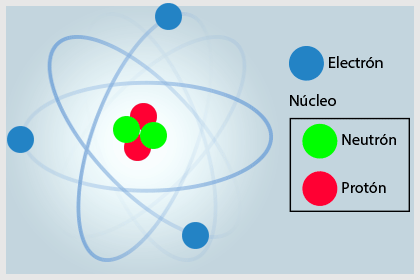
Los \(e^-\)(electrones): orbitan entorno al núcleo en radios del orden de \(10^{-10}\) metros, \(R=1\;\overset{o}{A}\).
Las partículas elementales tienen las siguientes propiedades.
| PARTÍCULA | PROPIEDAD CARGA ELÉCTRICA |
MASA | MOMENTO DIPOLAR MAGNÉTICO |
SPIN | |
| Electrón | \[e^-\] | \[-e\] | \[m_e\] | \[\checkmark\] | \[\checkmark\] |
| Protón | \[p\;\text{,}\;e^+\] | \[+e\] | \[m_p\] | \[\checkmark\] | \[\checkmark\] |
| Neutrón | \[n\] | \[----\] | \[m_n\] | \[\checkmark\] | \[\checkmark\] |
- Suponer que la carga eléctrica está siempre cuantizada. Y es el principio de cuantización de la carga.
- Suponer el principio de conservación de carga eléctrica
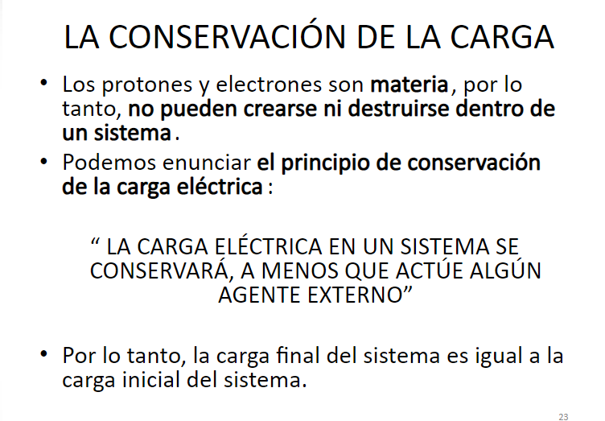
Los electrones no solo giran en torno al núcleo sino giran en sobre un eje que pasa por uno de sus diámetros.
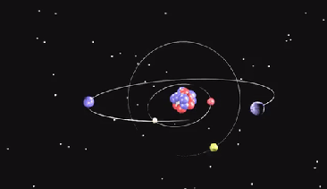

El giro de los electrones, produce dipolo magnético
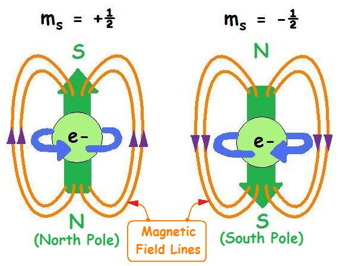
Intensidad de Corriente (i).- Se define como la cantidad de carga eléctrica que atraviesa la sección transversal de un material conductor en la unidad de tiempo
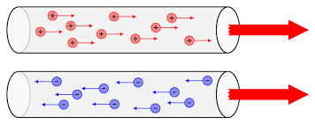
\[i=\frac{q}{t}\quad\left[\frac{C}{s}\right]\]
en términos diferenciales
Integrando:
Clasificación.
Los materiales desde un punto de vista eléctrico, se clasifican en: materiales aislantes, conductores, semiconductores y superconductores.
- Aislantes: No dejan pasar la corriente eléctrica través de ellos, no se arrancafácilmente 𝑒− de sus átomos ej, porcelana, vidrio, arcilla.
- Conductores: Presentan 𝑒− libres en las últimas órbitas de sus átomos.Dejan pasar la corriente eléctrica a través de ellos. Ej metales: Cu, Al; gases Na, Hg.
- Semiconductores: En determinadas condiciones dejan pasar la electricidad y en otras se oponen. Ala circulación de corriente
- Superconductores: No presentan resistencia eléctrica y se manifiesta un fuerte campo magnético
Nota.- Los materiales no conductores, son llamadas tambien aisladores o dieléctricos.
8.2 Electrización de la materia.
Es el exceso o deficiencia de electrones que pueden adquirir un material.
La materia puede electrizarse de dos maneras.
- Fricción: Contacto físico entre dos materiales.
Figura 8-5 Electrización por Fricción - Por inducción: Cuando no existe contacto físico.
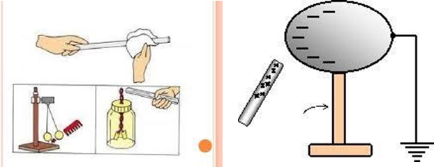
Figura 8-6 Electrización por inducción
Figura 8-7 Tipos de Electrización - Salen de cargas positivas que son fuentes generadoras de líneas y terminan en cargas negativas que son sumideros.
- El campo eléctrico es un vector tangente a una línea en cualquier punto.
- El número de líneas que se dibuja por unidad de área es proporcional a la magnitud del campo eléctrico.
- Las líneas de campo eléctrico no se cruzan.
8.3 Ley de Coulomb
8.3.1 Ley de las cargas.- Experimentalmente se comprueba que cargas del mismo signo sufren interacciones de repulsión y que cargas del signo contrario se atraen y esto se conoce como la ley de las cargas.
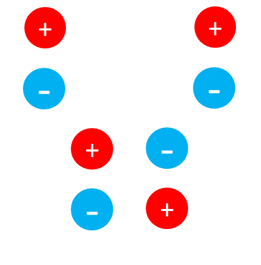
La ecuación que permite el cálculo de la fuerza eléctrica se conoce como la Ley de Coulomb que dice: Si se tiene dos cargas eléctricas separadas una distancia "d" entre ellas, entonces la fuerza que se ejerce a una distancia es central y está ubicada sobre la línea de acción que une las dos cargas y si las cargas son positivas, la fuerza será repulsiva.
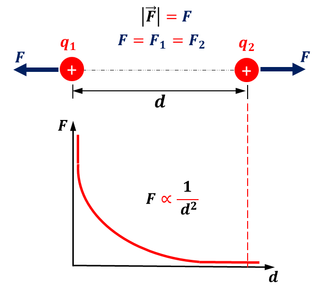
La fuerza:
\[F\propto q_1\,q_2\] \[F\propto \frac{1}{d^2}\] \[F\propto f(\text{medio},\varepsilon_0)\]Así, obtenemos, la fuerza entre las cargas:
Permitividad en el vacío: \(\varepsilon_0=8,85\times 10^{-12}\; [F/m]\)
tambien:
\[k=\frac{1}{4\pi\varepsilon_0}\]En el SI, la constante k se expresa:
\[k=9\times10^9 \left[\frac{N\,m^2}{C^2}\right]\]8.3.2 Ley de Coulomb: Forma vectorial
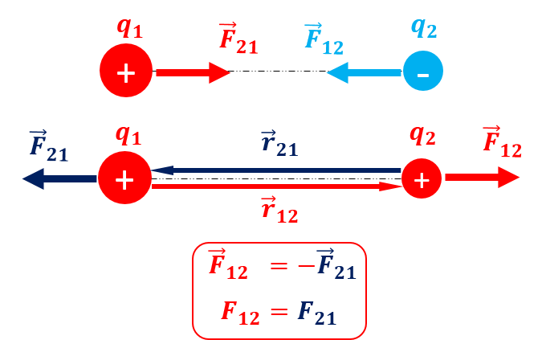
Así, tenemos:
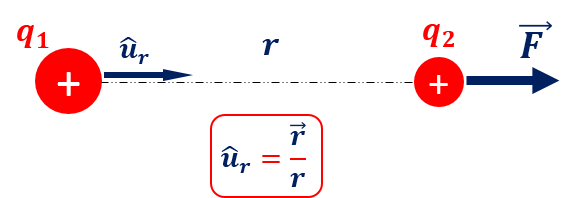
La ecuacion matemática
Donde:
Constante de Coulomb: \[k=\frac{1}{4\pi\varepsilon_0}=9\times10^9 \left[\frac{N\,m^2}{C^2}\right]\] Permitividad en el vacío: \[\varepsilon_0=8,85\times 10^{-12}\; [F/m]\]*Cuando existen dos cargas puntuales existe una fuerza de atracción o de repulsión
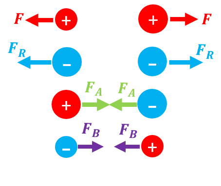
Cuando se tiene más de dos cargas eléctricas y se desea calcular la fuerza sobre una de ellas, entonces aplicamos el principio de superposición.
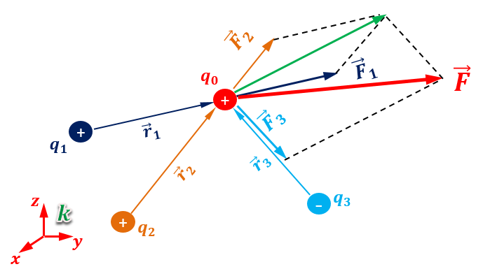
Hallamos la fuerza entre cada par de cargas, sobre la carga en cuestión y luego sumamos para obtener la fuerza resultante.
Ejemplo.-Hallar la fuerza que se ejerce sobre la carga que se encuentra en el origen de eje de coordenadas, segun la distribución de cargas mostradas, en el plano.
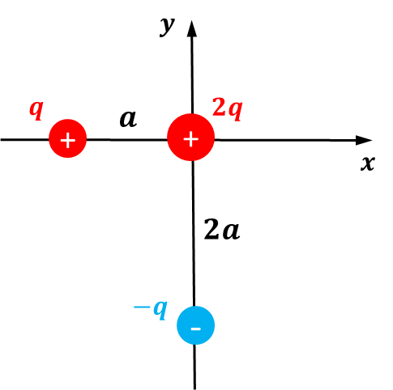
Solución.-
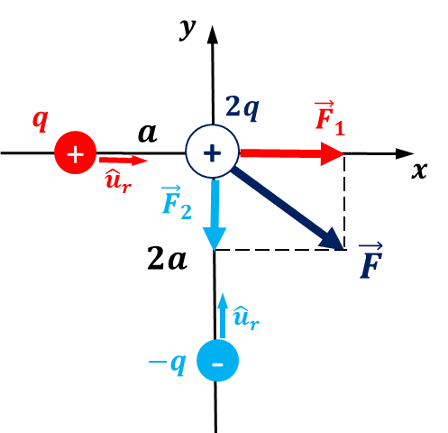
\[\vec{F}=\vec{F_1}+\vec{F_2}\] \[\vec{F}=\frac{k\left(2\,q^2\right)}{a^2}\hat{\imath}+\frac{k\left(2\,q^2\right)}{\left(2\,a\right)^2}\hat{\jmath}\]
Ejemplo.-hallar la fuerza sobre una carga ubicada en el vértice:
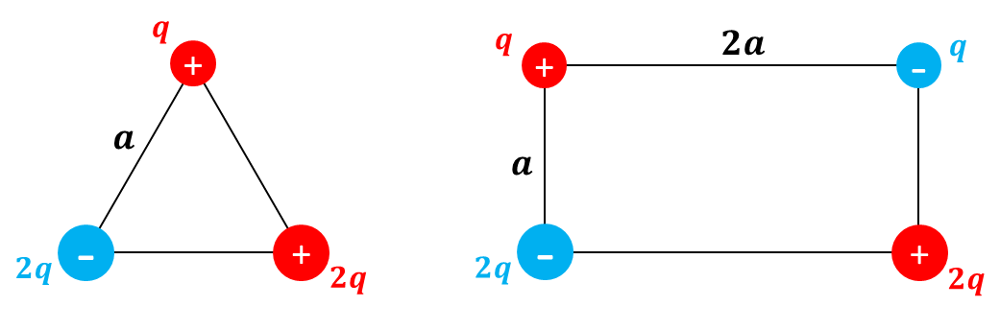
9 Campo Eléctrico y Potencial Electrostático
9.1 Campo Eléctrico
Es una situación física que se manifiesta alrededor de una carga eléctrica y cambia las propiedades del medio.
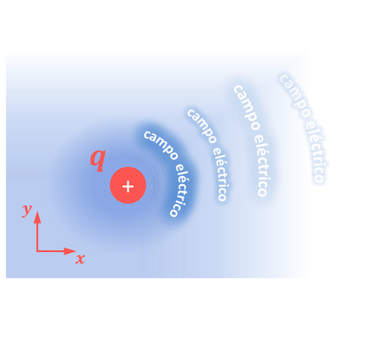
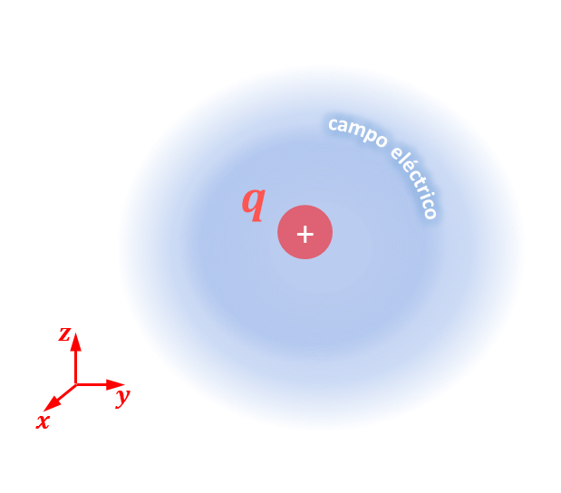
Se define como la fuerza eléctrica que se ejerce sobre una carga unitaria (+), denominada carga de prueba.
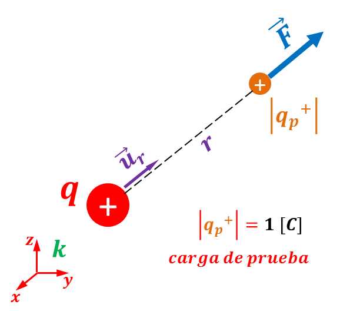
\[E=\frac{\text{Fuerza}}{\text{Carga de prueba}}\]
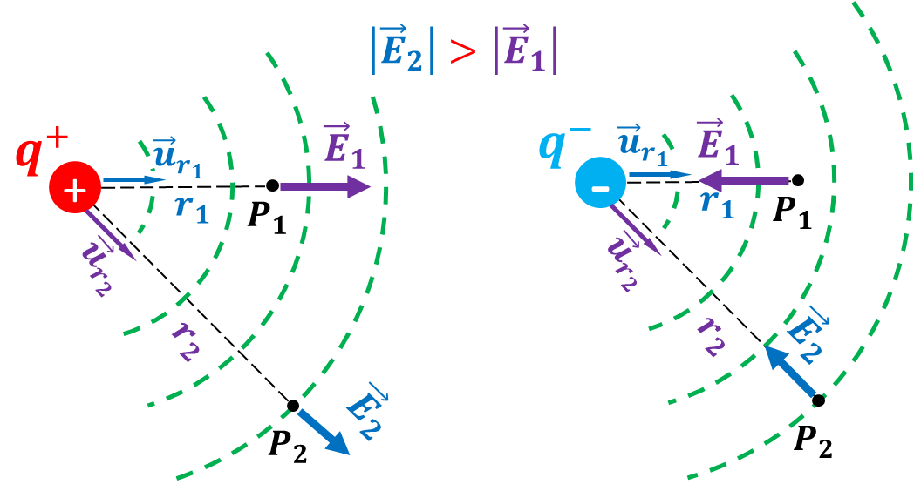
9.1.1 Líneas de campo eléctrico
Son líneas imaginarias que permiten visualizar el campo eléctrico y tienen las siguientes propiedades.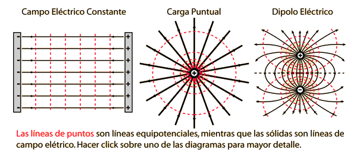
9.1.2 Densidad de carga
La carga eléctrica puede estar distribuida en longitudes, áreas y volúmenes, por lo tanto, podemos hablar de tres tipos de densidad que son:
| \[\text{DENSIDAD}\] | \[\text{ESQUEMA}\] | \[\rho\quad\text{(DENSIDAD)}\] | \[\text{q}\] |
| Lineal | 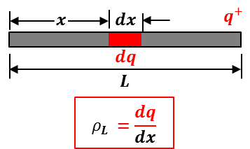 |
\[\rho_L=\frac{q}{L}=\frac{dq}{dx}\left[\frac{C}{m}\right]\] | \[q=\int_L \rho_L\,dx\] |
| Superficial | 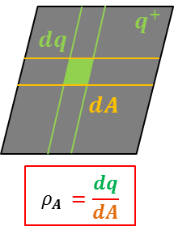 |
\[\rho_A=\frac{q}{A}=\frac{dq}{dA}\left[\frac{C}{m^2}\right]\] | \[q=\iint_A \rho_A\,dA\] |
| Volumétrica | 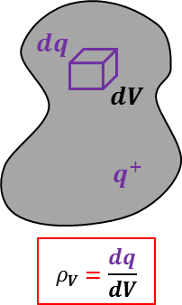 |
\[\rho_V=\frac{q}{L}=\frac{dq}{dx}\left[\frac{C}{m^3}\right]\] | \[q=\iiint_V \rho_V\,dV\] |
Ejemplo.- Hallar la carga que contenida en una esfera de radio a, si la $\rho_V$ varía con la distancia según la ecuación \(\rho_V=a\,r\,[C/m^3]\)
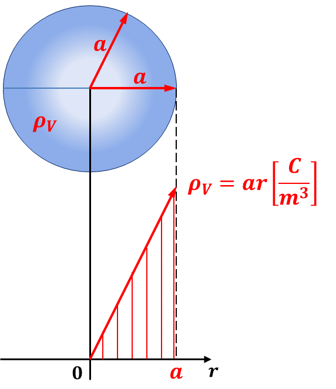
Solución.- \[\rho_V=a\,r\,\left[\frac{C}{m^3}\right]\] \[q=\iiint\rho_V\,dV\] \[dV=4\,\pi\,r^2\,dr\]
9.1.3 Cálculo del campo eléctrico (\(\vec E\)).
El campo eléctrico 𝐸ത en un punto del espacio, puede deberse a cargas eléctricas aisladas, distribuciones lineales, superficiales y volumétricas de carga . El campo resultante por el teorema de superposición será igual a la suma vectorial de los campos eléctricos producidos por cargas y distribuciones de cada carga.
Para deducir una ecuación general vamos a ver primero el campo eléctrico producido por una carga en un punto del espacio.
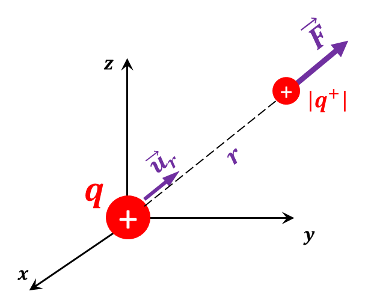
\[\vec F=k\,\frac{q_1\,q_2}{r^2}\,\hat u_r\] \[\vec F=k\,\frac{q\,\vert q^+\lvert}{r^2}\,\hat u_r\]
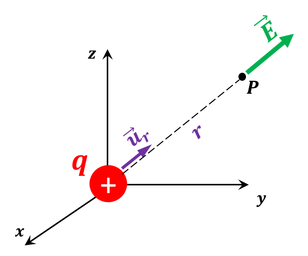
\[E\propto f(\text{medio},k)\] \[E\propto q\] \[E\propto \frac{1}{r^2}\]
Si tenemos varias cargas aisladas:
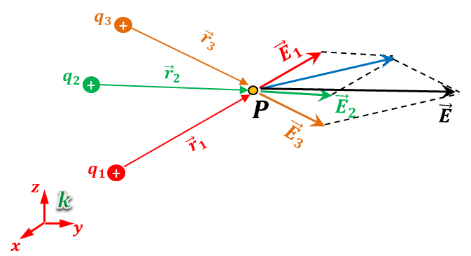
9.1.4 Distribución lineal de carga
Para distribución lineal de carga
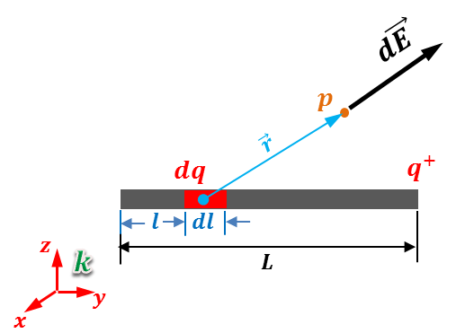
Campo debido a distribución lineal.
\[E_L=\int dE=\int \frac{k\,dq}{r_L^2}\,\hat u_{r_L}\]9.1.5 Distribución superficial de carga
Para distribución superficial de carga
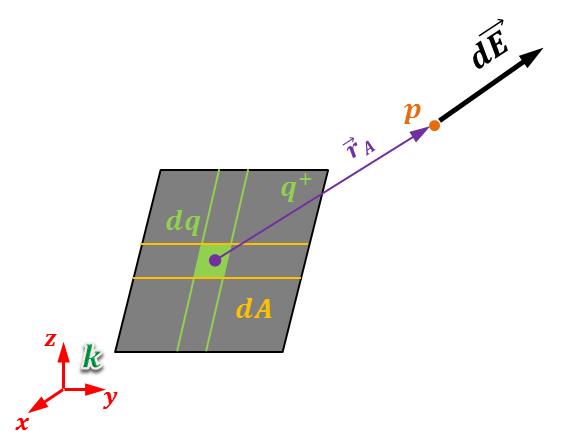
Campo debido a distribución superficial.
\[E_A=\int dE=\int \frac{k\,dq}{r_A^2}\,\hat u_{r_A}\]9.1.6 Distribución volumétrica de carga
Para distribución volumétrica de carga
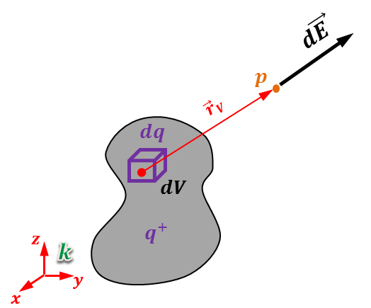
Campo debido a distribución volumétrica.
\[E_V=\int dE=\int \frac{k\,dq}{r_V^2}\,\hat u_{r_V}\]Ecuación general para el cálculo del campo eléctrico:
\[E=E_{\therefore}+E_L+E_A+E_V\]